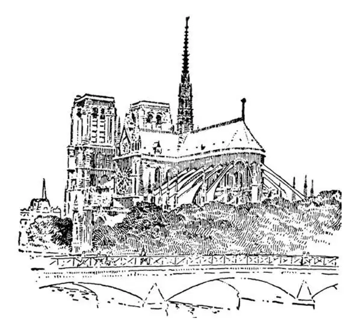
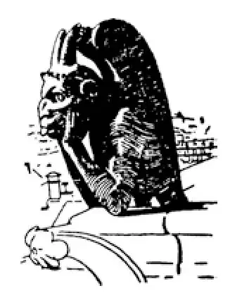
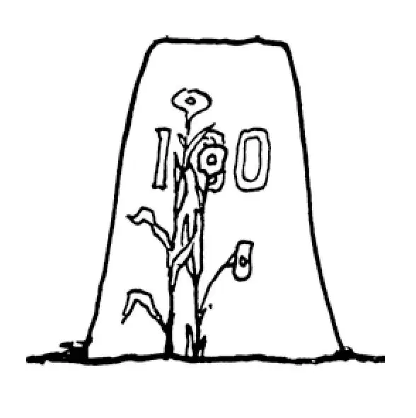

56
Bibles Made of Stone and Glass
石头和玻璃制作的《圣经》

IN Europe during the Middle Ages, people often went to church every day and often several times a day. They did not go only when there was a church service. They went to say their prayers by themselves; they went to tell their troubles to the priest, to get advice from him, to burn a candle to the Virgin Mary, or simply to chat with their friends.
All during the Crusades and immediately after the Crusades, the chief thing that many people thought about was their church.
Almost everyone in Europe was a Christian although many towns had Jewish residents as well. You may remember that Jews had been forced to leave the Holy Land way back in 70 A.D. by the Romans. Some had made their way to Europe.
For Christians, there was only one church in a neighborhood, and everyone went to the same church, for there were no Baptists, nor Episcopalians, nor Methodists; all were just Christians.
The church was everyone's meetinghouse, so people naturally gave as much money and time and labor as they could to make their church the best that could be built. That is why there were built in France and other parts of Europe at this time many of the finest churches and cathedrals in the world. These churches and cathedrals are still standing, and because they are so beautiful, people go long distances to see them.
Do you know what a cathedral is? A cathedral is not just a large church. It is the church of a bishop. In the chancel of this church, there is a special chair for the bishop. This bishop's chair is called in Latin a cathedra , and so his church is named a cathedral after this chair.
These churches and cathedrals were nothing like the old Greek and Roman temples; they were not like anything that had ever been built before.
If you have ever built a house out of blocks, you probably did it this way: first you stood two blocks upright, and then you laid another block across the top of these for a roof. This is the way the Greeks and Romans built.
But the Christians throughout Europe at that time did not build in this way at all.
When you were building toy houses, instead of laying a single block across the two standing ones, you may perhaps have tried leaning two blocks together like the sides of a letter A for a roof. If you did, you know what happened: the two leaning blocks pushed over the sides, and crash ! everything tumbled. Well, these churches were built somewhat in this way, with stones arched across the standing stone columns. But to keep the stone arches from pushing over the standing stone columns, the builders put up props or braces. These props or braces were made of stone, too, and these props of stone were called flying buttresses .

Flying buttresses—apse of Notre Dame （拱扶垛——巴黎圣母院的半圆室）
The people in Italy thought this a crazy way of building. They thought such buildings must be shaky and might easily topple over—like a house of cards. The Goths who had conquered Italy in 476 were considered wild and ignorant and after that people called anything wild and ignorant Gothic . People called all buildings such as I have just described Gothic , although the Goths had nothing to do with the buildings.
Indeed, from my description you, too, may think such buildings propped up by flying buttresses must have been tottering and ugly, but they were neither. They were not rickety, for though occasionally one that was not carefully built did collapse, the largest and best are still standing today. Although there were old-fashioned people who thought no building was beautiful that was not built in the Roman or Greek style, we have come to admire the great beauty of these so-called Gothic buildings.
There were other ways in which the Gothic churches were different from the Greek and Roman temples. Before a Gothic church was started, a very large cross was first drawn on the ground with its head towards the east, because that is the direction of Jerusalem. On this cross-shaped plan, the church was built so that if you looked down from above on the finished building, it was shaped like a cross with the altar always toward the east.
Gothic churches had beautiful spires or arrows , which have been likened to fingers pointing to heaven. The doorways and windows were not square or round at the top, but pointed, like hands placed together in prayer.
Nearly the whole side of a Gothic church was made of glass. These large windows were not, however, plain white glass, but beautiful pictures made of colored glass. Small pieces of different colors were joined together at their edges with lead to make what looked like wonderful paintings. These pictures were much finer than ordinary paintings, for the light shone through the stained glass and made the colors brilliant as jewels—blue like the clear sky, yellow like sunlight, red like a ruby. These pictures in glass told stories from the Bible. They were like colored illustrations in a book. The people who could not read, and very few could read, were able to know the Bible stories just by looking at these beautiful illustrations.
Statues of saints and angels and characters in the Bible were carved in the stonework of the church. The churches were like Bibles of stone and glass.
Besides these holy things, strange, grotesque beasts were also made in stone—monsters like no animal that has ever been seen in nature. These creatures were usually put on the outside edge or conner of the roof or they were used for water-spouts and called gargoyles . They were supposed to scare away evil spirits from the holy place.

Gargoyle（滴水嘴）
No one now knows who were the architects or the builders of these Gothic churches or who were the sculptors or artists. Almost everyone did some work on the church. Instead of giving money, men and women gave time and labor. Men carved stone or made stained glass. Women sewed and embroidered vestments and altar cloths.
Some of these Gothic churches took hundreds of years to build, so that the workmen who started them never lived to see them finished. Some of the most famous cathedrals are Canterbury Cathedral in England, the Cathedral of Notre Dame in Paris, Cologne Cathedral in Germany, and Chartres Cathedral in France.
Cologne Cathedral took the longest of all to build, as it was not entirely finished until about seven hundred years after it was begun! Some of the cathedrals were destroyed during the many wars fought since the Middle Ages.
Gothic churches were built, with loving care, of stone and jeweled glass. Nothing but the best was thought good enough. Today many churches are still built with spires, pointed doors, and some stained-glass windows, and often the altar is toward the east. But although they imitate the Gothic style in these things, they seldom have stone ceilings, as Gothic churches had, nor flying buttresses, nor walls of stained glass. Real Gothic was enormously expensive and difficult, and nowadays people haven't the time, the money, nor the interest to build in such a way.
That is the story of Gothic churches that the Goths had nothing to do with.
【中文阅读】
在中世纪时的欧洲，人们通常每天都去教堂，常常一天去好几次，他们不是只在有礼拜仪式时才去。他们去教堂可以自己做祷告；可以向神父倾诉自己的苦恼，从他那儿得到建议，可以在圣母马利亚像前点燃蜡烛许愿，或者只是去那儿和朋友们聊聊天。
十字军东征期间和刚结束的时候，许多人首先考虑的就是他们的教堂。
差不多所有欧洲人都是基督徒，不过许多城镇也有些犹太居民。也许你还记得早在公元70年由于罗马人的入侵，犹太人被迫离开圣地四处流亡，其中有些人去了欧洲。
对于基督徒而言，一个居民区只有一所教堂，人人都去同一座教堂，因为那时还没有浸信会教徒，没有圣公会教徒，没有循道宗教徒，所有人只是基督徒。
既然教堂是大家的聚会所，所以人们自然会尽可能付出钱财、时间和精力把他们的教堂建得最好。这就是为什么在那个时期法国和欧洲其他地区建造了很多世界上最精美的教堂和大教堂。这些教堂和大教堂至今仍然矗立在那里，因为它们华丽壮观，所以即使路途遥远人们也要前去参观。
你知道什么是大教堂吗？大教堂不只是面积很大，而且它是主教的教堂。在大教堂的圣坛里，有一个专为主教而设的特别椅子。这把主教的椅子在拉丁语中被称为“主教座”，所以大教堂以这把椅子命名，也叫做主教座堂。
这些教堂和大教堂与古希腊和罗马的神庙完全不一样，和以前的任何建筑物也不一样。
如果你用积木搭过房子，可能你是这样做的：首先你把两块积木竖起来，然后把另一块积木横放在这两块积木顶上做屋顶。希腊人和罗马人就是这样建造房子的。
但是在中世纪欧洲，各地的基督徒建造房子完全是用另一种方式。
你搭玩具房子时，可能不是把一块积木横放在两块直立的积木上，而是试着把两块积木靠在一起做屋顶，像字母“A”的两条斜边一样。如果你试过的话，就知道会是什么结果了：斜靠在一起的两块积木把两边的积木抵倒，哗啦一声，所有积木都倒塌了！欧洲这些教堂就有点像这样建成的，石头做成拱形跨在直立的石柱上。不过为了防止石拱推倒直立的石柱，建造者搭了很多支柱或支架。这些支柱或支架也是用石头做的，这些石头做的支撑物被称为“拱扶垛”。
意大利人认为用这种方式建房子真是疯了。他们想这样的建筑肯定不牢固，很容易倒塌——就像纸牌搭的房子一样。公元476年征服过意大利的哥特人被认为既野蛮又无知，从那以后人们把任何粗野、愚昧的事物都叫做“哥特式的”。我刚才描述的这类建筑物也被称为“哥特式的”，尽管哥特人和这种建筑物没有任何关系。
的确，通过我的描述你可能也以为这种由拱扶垛撑起的建筑物一定摇摇欲坠、丑陋不堪，但事实并非如此。它们没有摇摇晃晃，尽管偶尔某个建筑物因为盖得不仔细而坍塌，但是那些最大、最重要的建筑物现在仍然屹然不动。虽然还有些守旧的人认为凡是不按古罗马或希腊风格而造的建筑物都是不美的，但是这些所谓的哥特式建筑的华丽壮观最终还是让我们赞叹不已。
在其他一些方面哥特式教堂与希腊和罗马的神庙也不相同。哥特式教堂开工之前，先在地上画一个巨大的十字架，十字架的头向着东方因为那是耶路撒冷的方向。教堂是按这种十字架平面图而建造的，所以在建成后，如果你从教堂高处俯瞰，教堂的形状就像十字架，祭坛总朝向东方。
哥特式教堂有美丽的尖顶或“箭头”，被比作指向天堂的手指。门道和窗户的顶部不是方形或圆形，而是尖的，就像人们祷告时合十的双手。
哥特式教堂几乎有整整一面是用玻璃做的。但是这些大玻璃窗不是平常的白玻璃，而是由彩色玻璃做成美丽图画。不同颜色的小块玻璃在边缘处用铅条固定在一起，拼成一幅幅图案，像精美的油画。这些图案比普通油画美多了，因为阳光透过彩色的玻璃，让画上的色彩绚丽如宝石——蓝色像是晴天，黄色如同太阳，红色美似红宝石。这些玻璃上的图案讲述了圣经中的故事。它们就像书中的彩色插图。那些不识字的和识字很少的人只要看看这些美丽的插图就能知道圣经故事了。
圣经里面的圣徒、天使和人物雕刻在教堂的砖石上。这些教堂犹如石头和玻璃做成的圣经。
除了这些神圣的事物，还用石头做成奇形怪状的野兽——这些怪兽一点也不像自然界里所能看到的动物。通常这些怪兽被摆放在屋檐上或屋顶的角落里或者被用做喷水嘴，被称为“滴水嘴”。这些怪兽据称可以把恶魔从这神圣的地方吓跑。
没人知道这些哥特式教堂的建筑师或修建者是谁，雕刻者或艺术家是谁。几乎每个人都为教堂出了力。人们不是捐钱而是直接付出了时间和劳动。男人们雕刻石头或者制作彩色玻璃。女人们缝制圣衣和祭坛罩，并在上面刺绣。
有些哥特式教堂花了几百年才建成，所以开工时的工匠直到去世也没有看到教堂完工。其中最著名的大教堂有英国的坎特伯雷大教堂、巴黎的圣母院、德国的科隆大教堂和法国的沙特尔大教堂。
科隆大教堂是所有大教堂中建造时间最长的，因为从开始动工，建了近七百年还没有彻底完成！中世纪以来战乱频繁，有些大教堂在战火中毁掉了。
哥特式教堂是用石头和饰有宝石的玻璃精心建造而成的。只有最好的才被认为是完美的。今天很多教堂仍然有尖塔、尖门、一些彩色玻璃窗，通常祭坛也向着东方。但是尽管它们在这些方面模仿哥特式风格，但是它们很少有哥特式教堂那样的石头天花板、拱扶垛和彩色玻璃墙。建造真正的哥特式教堂耗资巨大，非常困难，如今人们没有那么多时间、金钱和兴趣来建造这样的教堂了。
这就是哥特式教堂的故事，和哥特人一点关系也没有哦。
